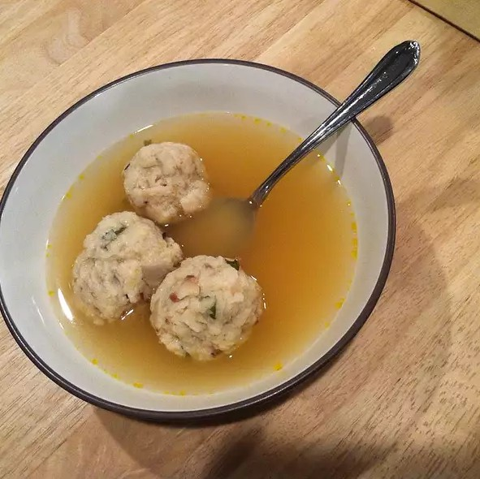

Matzo Ball Soup

Description:
This recipe serves a lot of people depending on the size of the bowl you use.
Ingredients
- 2, 10 ounce, packages matzo crackers
- 1/2 cup butter
- 6 eggs
- salt and pepper to taste
- 3 tablespoons minced fresh parsley
- 2 onions, minced
- 5 ounces matzo meal
- 96 ounces chicken broth
Directions:
Steps:
- Bring a large pot of lightly salted water to a boil.
- Break matzo crackers into small pieces, and place in a large bowl. Add water to cover; allow to soak for a few minutes, until soft. Drain off excess water.
- Melt butter in a large skillet over medium heat and stir in drained matzos; stir until mixture is dry and slightly brown. Remove from heat, and mix in eggs, salt and pepper to taste, parsley, and onions.
- Mix in just enough matzo meal to make mixture hold together. Roll one golf ball-size matzo ball. Place matzo ball in the boiling water to test the mixture. The ball must rise to the top of the water and not break apart. If it does not rise, then too much matzo meal was added. In this case, add another beaten egg to the mixture and try again. When desired consistency is reached, roll all of mixture into golf ball size spheres.
- In a large saucepan, bring chicken broth to a slow boil over medium heat; add balls to broth. Serve soup as the balls rise to the top of the broth.
Notes:
Make sure to not add too much matzo meal in order to make the matzo ball float to the top of the boiling water.